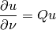
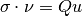
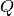

Fourier-Robin brick¶
This brick can be used to add boundary conditions of Fourier-Robin type like:

for scalar problems, or

for linearized elasticity problems. Q is a scalar field in the scalar case or a matrix field in the vectorial case. This brick works for both real or complex terms in scalar or vectorial problems.
The function adding this brick to a model is:
add_Fourier_Robin_brick(md, mim, varname, dataexpr, region);
where dataexpr is the data of the model which represents the coefficient . It can be an arbitrary valid expression of the weak form language (except for the complex version for which it should be a data of the model)
Note that an additional right hand side can be added with a source term brick.

前のトピックへ
次のトピックへ
Isotropic linearized elasticity brick
Download
Main documentations
- GetFEM++ User documentation
- Python Interface
- Matlab Interface
- Scilab Interface
- Gmm++
- GetFEM++ project